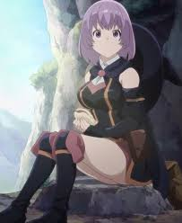

The first and most well known of the deres is the tsundere. The “tsun” in tsundere comes from the Japanese word tsuntsun which means to be aloof or high and mighty. Thus, tsunderes are often stuck-up on the outside but loving on the inside.
Often, tsunderes are embarrassed by or don't know what to do with their romantic feelings and become even more belligerent and egotistical than normal—especially in proximity to the objects of their affections. Their constant inner struggle between their pride and love is the key to how these characters act.
As tsundere characters develop and accept their feelings, they will often remain in “tsun” mode in public but become more and more “dere” when in private.
If a character ever utters the phrase “it's not that I like you or anything,” he or she is pretty much guaranteed to be a tsundere.
The “kuu” in kuudere comes from the Japanese pronunciation of the English word “cool” (クール) and thus is used for a person who is calm and composed on the outside. They are the ones who are serious and always in charge of a situation. They never panic and are who everyone else turns to in a crisis.
Kuuderes often speak in a calm monotone and seem unaffected by the world around them. They never seem to be overly happy, excited, or surprised—just as they never appear sad, annoyed, or angry. Extreme examples may even seem to be completely emotionless.
Sometimes, kuuderes are the class presidents that keep their schools running. Other times they take the form of stoic, professional assistants to superiors that they love and respect.
While kuuderes remains strict and business-like, they are emotional underneath their self-control. However, they tend to fear showing any weakness such as admitting liking someone or coming to rely on someone emotionally as well as professionally. Some, are unclear as to how to even express said emotions—and in extreme cases, are unsure what feelings actually mean.
The “dan” in dandere comes from the Japanese word “danmari” (黙り) meaning silence. Thus a dandere is a quiet and often antisocial character.
Danderes often want to be sociable but are too scared or too embarrassed to talk. They tend to fear that saying the wrong thing might get them into trouble—or some other socially awkward situation—so they say nothing to be on the safe side.
Of course, once danderes are befriended, they tend to lose their social inhibitions and become rather cute and happy—especially with the ones they love.
And then there is the yandere. The “yan” comes from “yanderu” (病んでる) which means to be sick—in this case, sick mentally. And unlike the others of the dere family, it is not the “dere” part that is hidden inside. No, on the inside of a yandere is where the crazy lies.
On the outside, a yandere is often a normal girl: happy, social, and usually well liked. But love makes her crazy—often violently so. Fear is at the core of a yandere: the fear that someone (usually another girl) will take the one she loves. To prevent this, she is willing to do anything—including kidnapping and murder.
There are generally two types of yanderes, obsessive and possessive. Obsessives will kill anyone and everyone who stands in the way of them having their “true loves.” Possessives will go one step further and even kill the ones they love so that they won't end up with anyone else.
In other words, once you go yandere, you never go back... mainly because you are handcuffed to a bed with your legs broken.